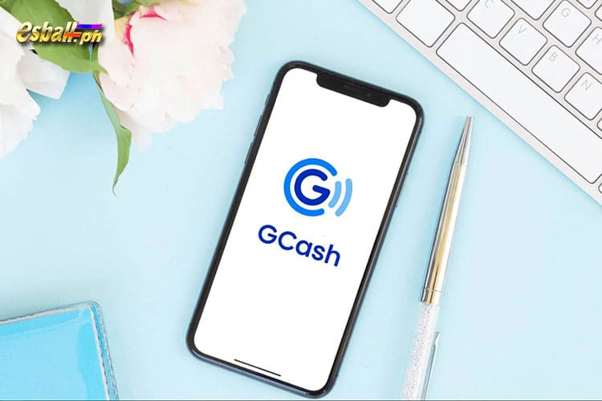

Ang mga pagbabayad sa online ay masyadong mapanganib sa mga araw na ito. Bibigyan namin ang mga Pilipinong mahilig sa online casino ng isang ligtas, maginhawa, mabilis at platform ng pagbabayad ng deposito at withdrawal o APP na "GCash". Kaya ang EsballPH online casino ay nag-aalok din ng paraan ng pagbabayad na ito.
Sa ibaba ng artikulong ito ay mga tagubilin sa 【Paano Magrehistro ng GCash】at 【Paano Magdeposito sa GCash sa EsballPH】.
Ano ang GCash?
Ang GCash ay isang serbisyo ng mobile wallet sa Pilipinas na nagbibigay-daan sa mga user na magsagawa ng iba't ibang transaksyong pinansyal sa pamamagitan ng kanilang mga mobile phone. Ito ay pinamamahalaan ng Mynt, isang subsidiary ng Globe Telecom, isa sa mga pangunahing kumpanya ng telekomunikasyon sa Pilipinas. Nagbibigay ang GCash ng isang hanay ng mga serbisyong pinansyal, na ginagawa itong isang popular at malawakang ginagamit na solusyon sa pagbabayad sa mobile sa bansa. Ang ilan sa mga pangunahing tampok at serbisyong ibinibigay ng GCash ay kinabibilangan ng:
- Mobile Money Transfer: Ang mga gumagamit ay maaaring magpadala at tumanggap ng pera sa at mula sa iba pang mga gumagamit ng GCash, gayundin sa mga hindi gumagamit ng GCash sa pamamagitan ng mga tradisyonal na bank account.
- Bills Payment: Binibigyang-daan ng GCash ang mga user na magbayad ng mga utility bill, credit card bill, at iba pang pinansyal na obligasyon nang direkta mula sa kanilang mga mobile phone.
- Shopping and Payments: Maaaring bumili ang mga user sa mga partner na merchant, online at offline, gamit ang kanilang mga pondo sa GCash.
- Online Transactions: Maaaring gamitin ang GCash para sa iba't ibang online na transaksyon, kabilang ang pagbili ng load para sa mga mobile phone, pagbili ng mga item mula sa mga online na tindahan, at higit pa.
- Investments: Nag-aalok ang GCash ng mga opsyon sa pamumuhunan, na nagpapahintulot sa mga user na mamuhunan ng kanilang pera sa iba't ibang instrumento sa pananalapi sa pamamagitan ng app.
- QR Code Payments: Sinusuportahan ng GCash ang mga pagbabayad ng QR code, na ginagawang maginhawa para sa mga user na magbayad para sa mga produkto at serbisyo sa mga pisikal na tindahan.
- Cash-in at Cash-out: Maaaring mag-load ng pera ang mga user sa kanilang GCash wallet (cash-in) sa pamamagitan ng iba't ibang paraan, tulad ng mga over-the-counter na transaksyon, bank transfer, at higit pa. Maaari rin silang mag-withdraw ng pera (cash-out) sa pamamagitan ng mga partner outlet.
Ang GCash ay naging mahalagang bahagi ng digital financial ecosystem ng Online Casino Philippines, na nagbibigay sa mga user ng maginhawa at madaling paraan upang pamahalaan ang kanilang mga pananalapi gamit ang kanilang mga mobile device. Nagkamit ito ng katanyagan para sa kadalian ng paggamit nito at sa iba't ibang serbisyong pinansyal na inaalok nito sa mga gumagamit nito.

Paggalugad sa Mga Bentahe ng Gcash para sa Filipino Online Casino Enthusiasts
Mga Maginhawang Transaksyon:
GCash offers a convenient way for Filipino online casino enthusiasts to fund their accounts and withdraw winnings. Transactions can be done seamlessly through the mobile app, eliminating the need for physical cash or traditional banking methods.
Mga Instant na Deposito:
Ang pagdedeposito ng mga pondo sa isang online casino account gamit ang GCash ay karaniwang madalian. Nagbibigay-daan ito sa mga manlalaro na magsimulang mag-enjoy sa kanilang mga paboritong laro sa casino nang walang pagkaantala, na nagpapahusay sa pangkalahatang karanasan sa paglalaro.
Seguridad at Privacy:
Gumagamit ang GCash ng mga tampok na panseguridad tulad ng proteksyon ng PIN at two-factor authentication, na tinitiyak ang kaligtasan ng mga transaksyong pinansyal. Nagbibigay ito ng mga manlalarong Pilipino ng ligtas at pribadong paraan upang pamahalaan ang kanilang mga transaksyon sa online casino.
Accessibility:
Ang GCash ay naa-access sa malawak na hanay ng mga user sa buong Pilipinas. Bilang isang mobile wallet, madali itong magamit sa mga smartphone, na ginagawang maginhawa para sa mga mahilig sa online casino na pamahalaan ang kanilang mga pondo on the go.
Mga Promosyon at Bonus:
Nag-aalok ang ilang online casino ng mga promosyon at bonus partikular para sa mga user na nagdedeposito o nag-withdraw ng mga pondo gamit ang GCash. Nagbibigay ito ng mga manlalarong Pilipino ng karagdagang insentibo upang piliin ang GCash para sa kanilang mga transaksyon sa online casino.
Mga Transaksyon na Matipid:
Ang mga transaksyon sa GCash ay kadalasang may mas mababang bayad kumpara sa mga tradisyonal na pamamaraan ng pagbabangko. Ang cost-effectiveness na ito ay kapaki-pakinabang para sa mga manlalarong Pilipino na gustong i-maximize ang kanilang badyet sa paglalaro.
Pagsasama sa Mga Online Merchant:
Ang GCash ay malawak na tinatanggap ng iba't ibang online na merchant, kabilang ang mga online casino. Ang pagsasamang ito ay nagbibigay-daan para sa isang tuluy-tuloy na karanasan kapag gumagawa ng mga transaksyon, ito man ay pagdedeposito ng mga pondo o pag-cash out ng mga panalo.
Dali ng Pamamahala ng Account:
Madaling mapamahalaan ng mga Pilipinong mahilig sa online casino ang kanilang mga GCash account sa pamamagitan ng user-friendly na mobile app. Kabilang dito ang pagsuri ng mga balanse, kasaysayan ng transaksyon, at pag-access sa iba't ibang feature, na nagbibigay ng walang problemang karanasan.
Hindi Kailangan ng Mga Bank Account:
Nagbibigay ang GCash ng opsyon para sa mga indibidwal na maaaring walang tradisyunal na bank account upang lumahok sa mga aktibidad sa online casino. Ang pagsasama na ito ay nagpapalawak ng access sa online gaming world para sa mas malawak na audience.
Kakayahan sa Paggamit:
Bukod sa mga online casino, ang GCash ay maaaring gamitin para sa iba't ibang transaksyon, tulad ng bills payment, online shopping, at money transfers. Ang kakayahang magamit na ito ay ginagawa itong praktikal na pagpipilian para sa pangkalahatang pamamahala sa pananalapi.

Paano mag register sa GCash? Paano Gumawa ng Tutorial sa GCash Account
- Maghanap sa GCash sa Google Play Store (Android) o sa App Store (Apple)
- I-download at i-install ang GCash
- Buksan ang GCash app at ipasok ang iyong kasalukuyang mobile number. I-tap ang Susunod
- Ilagay ang 6-digit na authentication code na ipinadala sa iyong mobile number. I-tap ang Isumite
- I-tap ang Bagong Account
- Punan ang lahat ng kinakailangang personal na detalye at i-tap ang Susunod
- Suriin ang lahat ng iyong mga detalye at piliin ang Kumpirmahin
- Itakda ang iyong 4-digit na MPIN at i-tap ang Kumpirmahin
- Dadalhin ka sa isang pahina na nagpapatunay na matagumpay mong na-nominate ang iyong MPIN. Piliin ang Pumunta sa Pag-login
- Maaari mo nang simulan ang paggamit ng GCash
Paano Magkaroon ng GCash FAQs
- Aling mga Bansa ang Nagtatrabaho sa GCash?
Ang tanging bansa na gumagana sa mga wallet ng GCash ay ang Pilipinas at tanging mga residente ng bansang ito ang maaaring gumamit ng mga ito bilang paraan ng pagbabayad at pag-withdraw. - Libre ba gumawa ng GCash account?
Ang paggawa ng GCash account ay walang bayad, at madali kang makakapag-sign up sa pamamagitan ng pag-download ng GCash app mula sa iyong app store nang walang anumang gastos. - Maaari ba akong gumamit ng landline number para magparehistro para sa GCash?
Ang pagpaparehistro para sa GCash ay nangangailangan ng numero ng mobile phone, at ang proseso ay kinabibilangan ng pagtanggap ng verification code sa numerong ito. - Maaari ko bang baguhin ang aking nakarehistrong numero ng mobile sa ibang pagkakataon?
Kung kailangan mong palitan ang iyong nakarehistrong mobile number, mayroon kang opsyon na gawin ito sa pamamagitan ng pakikipag-ugnayan sa customer support ng GCash para sa tulong. - Maaari ba akong magrehistro ng maraming GCash account na may parehong numero ng mobile?
Isang GCash account lamang ang pinapayagan sa bawat mobile number; hindi posibleng magrehistro ng maraming account gamit ang parehong numero. - Paano ko ire-reset ang aking MPIN kung nakalimutan ko ito?
Kung sakaling makalimutan mo ang iyong MPIN, maaari mo itong i-reset sa loob ng GCash app sa pamamagitan ng pagsunod sa mga ibinigay na prompt, na maaaring may kasamang proseso ng pag-verify. - Pwede bang gumawa ng GCash account ang foreigner?
Ang mga dayuhang naninirahan sa Pilipinas ay karapat-dapat na lumikha ng GCash account, basta't natutugunan nila ang mga kinakailangang identification at verification requirements. - Maaari ba akong magrehistro ng higit sa isang GCash account?
Bagama't maaari kang magkaroon ng isang GCash account, posibleng magkonekta ng higit sa dalawang GCash wallet dito, na nagbibigay-daan sa iyong pamahalaan ang maramihang mga financial wallet sa loob ng isang application o account. - Mayroon bang GCash mobile app?
Oo, mayroong nakalaang GCash mobile app na magagamit para sa pag-download sa parehong iOS at Android operating system, na nagbibigay-daan sa mga user na gumawa ng mabilis na mga deposito at withdrawal. - Maaari ba akong gumawa ng GCash account nang walang smartphone?
Sa kasamaang palad, hindi posible ang paggawa ng GCash account nang walang smartphone, dahil ang mobile app ay kinakailangan para sa paggawa ng account at proseso ng pamamahala.

Bakit ang Pinakamahusay na Online Casino Philippines Gumagamit ng GCash Analysis
Ang GCash ay isang sikat na serbisyo ng mobile wallet sa mga manlalarong Pilipino na nag-aalok ng iba't ibang feature na ginagawa itong isang maginhawa at madaling gamitin na paraan ng pagbabayad para sa mga online na transaksyon, kabilang ang paggamit sa mga online casino sa Pilipinas. Ipinakikilala ng sumusunod ang mga function ng GCash na may kaugnayan sa mga transaksyon sa online casino sa Pilipinas:
- Mabilis at Madaling GCash Transfer: Ang mga manlalarong Pilipino ay madaling makapaglipat ng pera sa ibang mga gumagamit ng GCash o maging sa mga hindi gumagamit ng GCash, na ginagawa itong isang maginhawang paraan para sa pagpapadala at pagtanggap ng mga pondo sa mga online casino platform. Ang platform ng online casino ng EsballPH ay maaaring magpadala at tumanggap ng mga pondo ng GCash.
- GCash Support Online na Pagbabayad: Ang GCash ay nagbibigay-daan sa mga manlalarong Pilipino na gumawa ng mga online na pagbabayad, na mahalaga para sa pagpopondo sa mga Philippine online casino account. Philippines Maaaring i-load ng bagong miyembro ang kanilang mga wallet ng GCash at gamitin ang mga pondo para sa tuluy-tuloy na mga transaksyon sa mga online casino platform ng EsballPH.
- Mga Pagpipilian sa Cash-in at Cash-out: Maaaring mag-load ang mga user ng pera sa kanilang mga GCash wallet sa pamamagitan ng iba't ibang paraan, tulad ng mga bank transfer, over-the-counter na transaksyon, at higit pa. Nagbibigay ito ng flexibility sa pagpopondo sa GCash account na gagamitin para sa mga deposito sa online casino. Bukod pa rito, maaaring i-cash out ng Bagong miyembro ng Pilipinas ang kanilang mga panalo sa pamamagitan ng paglilipat ng mga pondo mula sa kanilang GCash wallet sa kanilang mga bank account.
- Sinusuportahan ang Mga Pagbabayad ng QR Code: Sinusuportahan ng GCash ang pagbabayad ng QR code, na nagpapahintulot sa mga user na magsagawa ng mga transaksyon nang mabilis at secure. Tumatanggap ang online casino ng EsballPH ng mga pagbabayad sa GCash sa pamamagitan ng QR code, na nagpapasimple sa proseso ng pagdedeposito.
- Magbigay ng Mga Panukala sa Seguridad para sa mga Manlalaro na Pilipino: Isinasama ng GCash ang mga security feature, kabilang ang proteksyon ng PIN at two-factor authentication, na tinitiyak ang kaligtasan ng mga pondo at transaksyon ng Filipino Players. Nakatitiyak ito para sa mga bagong miyembrong Pilipino na gustong makisali sa mga aktibidad sa online casino.
- Pagsasama sa Philippines Online Casino: Ang GCash ay malawak na tinatanggap ng iba't ibang online na merchant, kabilang ang mga online casino sa Pilipinas. Ang malawak na pagtanggap na ito ay ginagawa itong isang maginhawa at maraming nalalaman na opsyon para sa mga gumagamit na lumalahok sa mga aktibidad sa paglalaro ng online casino.
- Accessibility: Maaaring ma-access ang GCash sa pamamagitan ng isang mobile app, na ginagawang madali para sa mga Filipino Player na pamahalaan ang kanilang mga pondo at magsagawa ng mga transaksyon on the go. Ang accessibility na ito ay partikular na mahalaga para sa mga Filipino Player na nasisiyahan sa paglalaro sa mga online casino platform gamit ang kanilang mga mobile device.
Paano mag-withdraw ng pera sa GCash? 3 Simpleng Paraan para Mag-Cash Out sa GCash Guide
Mayroong ilang mga paraan upang makapag-Cash Out ng iyong GCash account; kabilang dito ang:
- Paraan 1: Mag-Cash Out gamit ang GCash MasterCard
- Paraan 2: Mag-Cash Out gamit ang GCash Partner Outlets
- Paraan 3: Cash Out gamit ang Bank Transfers
Cash Out gamit ang GCash MasterCard
Ang paggamit ng GCash MasterCard ay isa sa mga pinakamadaling paraan para makapag-cash out sa iyong GCash account. Maaari mo lamang gamitin ang iyong GCash MasterCard sa mga kalahok na ATM upang mag-withdraw ng cash, tulad ng gagawin mo sa anumang iba pang debit card.
Paano Kumuha ng GCash MasterCard? Panimula sa mga hakbang para mag-apply para sa GCash Mastercard
- I-access ang iyong GCash app sa pamamagitan ng pag-log in, pagkatapos ay piliin ang opsyong "Show More" mula sa dashboard ng app.
- Hanapin ang lugar na "Fund Management" at piliin ang "Cash Out" mula doon.
- Piliin ang "Ihatid" mula sa screen na lalabas sa susunod. Ipapakita sa iyo ang isang form upang kumpletuhin ang iyong address sa pagpapadala para sa iyong card. Pagkatapos ma-verify ang lahat ng mga detalye, ipadala sa form.
- I-verify ang page ng pagbabayad, at kumpleto na ang iyong transaksyon. I-verify na mayroon kang sapat na pera sa iyong GCash wallet para mabayaran ang halaga ng GCash MasterCard. Ang pag-order ng card ay nagkakahalaga ng PHP 150. Ang halaga ng pagpapadala ng card sa iyong bahay ay PHP 65.
Upang makapag-withdraw ng pera mula sa mga kalahok na ATM, maaaring kailanganin mong bayaran ang mga sumusunod na bayarin:
- Maaaring kailanganin mong magbayad ng ATM withdrawal fee na ₱10 hanggang ₱18 sa Pilipinas.
- Maaari kang singilin ng ATM withdrawal fee na ₱150 kung gagamit ka ng ATM na matatagpuan sa ibang bansa.
Mag-Cash Out gamit ang GCash Partner Outlets
Bukod pa rito, sa GCash Partner Outlets (GPOs) na kalahok, maaari kang Mag-Cash Out ng GCash. Ito ay simple at maginhawang mag-cash in sa mga partner outlet. Ang lahat ay gumagawa ng mga errands, grocery shop, at pagbili sa mga tindahan. Kung ang tindahan na binibisita mo ay tumatanggap din ng Cashing Out ng GCash, maaari kang makakuha ng pera doon at doon.
Aling mga partner outlet ang sumusuporta sa Cashing Out ng GCash?
Para tulungan ka sa Cash Out sa mga pisikal na lokasyon, nakipagtulungan ang GCash sa ilang kilalang retailer at merchant sa Pilipinas.
Narito ang isang listahan ng mga aprubadong lokasyon ng kasosyo kung saan maaari mong i-redeem: Puregold, Robinsons Department Store,Posible, SM, Tambunting, TrueMoney, Villarica.
Paano Mag-Cash Out ng GCash sa mga lokasyon ng partner outlet?
- Buksan ang GCash app, mag-log in, at piliin ang "Show More" mula sa dashboard view.
- Piliin ang "Cash Out" sa ilalim ng kategoryang "Fund Management."
- Ang "GCash MasterCard" at "Over the Counter" ay ang dalawang alternatibo na nakikita mo na ngayon. Mag-click sa partner outlet kung saan mo gustong mag-cash out sa ilalim ng "Over the Counter" grouping. I-click ang "Tingnan Lahat" kung hindi ipinapakita ang iyong gustong partner source.
- Sundin ang mga tumpak na tagubiling ibinigay ng GCash app para makapag-cash out sa napiling lokasyon ng partner. Upang makuha ang iyong pera, sundin lamang ang mga simpleng tagubilin.
Cash Out gamit ang Bank Transfers
Ang direktang bank transfer ng pera sa iyong bank account ay isang karagdagang praktikal na paraan para ma-cash out ang iyong GCash account. Nagagawa naming ilipat ang iyong mga liquid asset—iyon ay, pera—mula sa GCash papunta sa iyong bangko sa ganitong paraan. Ang pera ay magagamit mo na ngayon sa iyong bank account, kung saan maaari mo itong gamitin para sa anumang bagay na ginamit mo sa iyong bank account o i-withdraw ito bilang cash sa pamamagitan ng ATM.
Saang mga bangko ako maaaring mag-Cash Out mula sa aking GCash account?
Maaari kang mag-Cash Out sa iba't ibang mga bangko na sinusuportahan ng GCash sa loob ng kanilang ecosystem. Mag-navigate sa "Bank Transfer" na opsyon sa iyong GCash app para tingnan ang listahan ng lahat ng mga bangko na maaari mong Mag-Cash Out. Gagawin nitong madali para sa iyo na matukoy kung aling mga bangko ang sinusuportahan.
Ang listahan ng mga bangko na sinusuportahan na ngayon ay ang mga sumusunod: AllBank (A Thrift Bank), Inc., Asenso (Rural Bank of Guinobatan), Asia United Bank Corporation, Bangko Mabuhay (A Rural Bank), Inc., Bank of Commerce, BanKo, A Subsidiary of BPI, Bayad, BDO Network Bank, BDO Unibank, Inc., Binangonan Rural Bank (BRBDigital), BPI / BPI Family Savings Bank, Camalig Bank, CARD Bank Inc., Cebuana Lhuillier Bank / Cebuana Xpress, China Bank Savings, Inc., China Banking Corporation, Coins.ph (DCPay), CTBC Bank (Philippines) Corporation, Development Bank of the Philippines, Dumaguete City Development Bank, Dungganon Bank (A Microfinance Rural Bank), Inc., East West Banking Corporation, Equicom Savings Bank, Inc. , GrabPay, ING Bank N.V. , ISLA Bank (A Thrift Bank), Inc. , JuanCash (Zybi Tech Inc.) , Komo / EastWest Rural Bank, LANDBANK / OFBank, Legazpi Savings Bank, Malayan Bank Savings and Mortgage Bank, Inc. , Maybank Philippines, Inc. , Metropolitan Bank and Trust Co. , Mindanao Consolidated CoopBank, Netbank, OmniPay, Inc. , Partner Rural Bank (Cotabato), Inc. , PayMaya Philippines, Inc. , Philippine Bank of Communications, Philippine Business Bank, Inc., A Savings Bank, Philippine National Bank (PNB) , Philippine Savings Bank, Philippine Trust Company, Producers Bank, Queenbank, Quezon Capital Rural Bank, RCBC/DiskarTech, Robinsons Bank Corporation, Seabank, Security Bank Corporation, ShopeePay, Standard Chartered Bank, Starpay, Sterling Bank of Asia, Inc., A Savings Bank, Sun Savings Bank, Inc. , TayoCash, UCPB Savings Bank, Union Bank of the Philippines, United Coconut Planters Bank (UCPB) , USSC Money Services, Veterans Bank, Wealth Development Bank.
Ano ang proseso ng Cash Out ng GCash sa aking bank account?
- Buksan ang GCash app, mag-log in, at piliin ang opsyong "Send Money" mula sa dashboard. Piliin ang "Bank Transfer" o "Send Money to Bank" pagkatapos nito.
- Piliin ang iyong bangko mula sa listahan ng mga sinusuportahang bangko na lalabas. Susunod, ilagay ang halagang nais mong ilipat mula sa GCash papunta sa iyong bank account kasama ng anumang karagdagang impormasyon na hiniling, tulad ng iyong account number at pangalan.
- I-verify ang katumpakan ng iba pang mga katotohanan at ang halaga na iyong inililipat bago isumite ang iyong kahilingan sa paglipat. Aasikasuhin ang iyong kahilingan sa paglipat sa sandaling makumpirma mo, at makakatanggap ka ng SMS na nagpapaalam sa iyo na nangyari ang transaksyon.

Mga FAQ sa Online Casino Philippines GCash
- Aling nangungunang online casino ang gumagamit ng GCash sa Pilipinas?
Isa sa mga kilalang online casino sa Pilipinas na nagpapadali sa GCash bilang paraan ng pagbabayad at pag-withdraw ay ang "EsballPH Online Casino." Ang platform na ito ay nag-aalok sa mga manlalaro ng kaginhawahan ng paggamit ng GCash para sa parehong pagdedeposito at pag-withdraw ng mga pondo, na tinitiyak ang tuluy-tuloy at secure na mga transaksyon. - Ano ang pinakamahusay na online casino sa Pilipinas gamit ang GCash?
Ang pagtukoy sa pinakamahusay na online casino sa Pilipinas gamit ang GCash ay kinabibilangan ng pagsasaalang-alang sa mga salik gaya ng pagkakaiba-iba ng laro, pamamahala ng account, karanasan ng user, functionality ng app, at suporta sa customer. Ang EsballPH Online Casino ay lumalabas bilang isang malakas na kalaban, na nag-aalok ng magkakaibang hanay ng mga laro sa casino at isang secure na kapaligiran para sa mga manlalaro. - Ano ang pinakamahusay na online casino na totoong pera na legit?
Para sa mga naghahanap ng lehitimong online casino para sa totoong pera na paglalaro sa Pilipinas gamit ang GCash, ang EsballPH Online Casino ay namumukod-tangi. Nagbibigay ito sa mga manlalaro ng malawak na seleksyon ng mga laro, mahusay na transaksyon sa GCash, at pangkalahatang kasiya-siyang karanasan sa paglalaro. - Ano ang top earning online casino Philippines Gcash?
Ang EsballPH Online Casino ay kinikilala rin bilang isa sa mga nangungunang online casino sa Pilipinas na gumagamit ng GCash para sa parehong mga mobile at desktop na transaksyon. Ang iba't ibang laro nito, nakakaakit na mga bonus, at tuluy-tuloy na paraan ng pagbabayad ng GCash ay nakakatulong sa pagiging popular nito sa mga manlalaro. - Anong mga casino app ang nagbabayad ng totoong pera sa Gcash gamit ang mga transaksyon?
Sa mga tuntunin ng mga casino app na nagbabayad ng totoong pera sa GCash na may maayos na mga transaksyon, ang EsballPH Online Casino ay isang mapagkakatiwalaang pagpipilian. Nag-aalok ang platform ng user-friendly na karanasan sa mobile at sinusuportahan ang GCash para sa maginhawa at mabilis na proseso ng pagdedeposito at pag-withdraw. - Anong casino online ang may pinakamataas na bonus na walang deposito?
Para sa pinakamataas na walang depositong bonus sa isang online casino sa Pilipinas gamit ang GCash, ang EsballPH Online Casino ay nagbibigay ng mapagkumpitensyang mga alok at promosyon ng bonus. Maaaring tangkilikin ng mga manlalaro ang mga mapagbigay na bonus nang hindi nangangailangan ng paunang deposito. - Anong casino ang may pinakamaraming nanalo?
Ang EsballPH Online Casino ay kilala sa pagkakaroon ng malaking bilang ng mga nanalo, na ginagawa itong isang nangungunang pagpipilian para sa mga naghahanap ng online casino sa Pilipinas kung saan ang mga manlalaro ay may pagkakataong manalo ng mga makabuluhang premyo sa iba't ibang mga laro.. - Ano ang laruin para manalo ng GCash money?
Kung ang mga manlalaro ay naglalayon na manalo ng GCash money, ang EsballPH Online Casino ay nag-aalok ng iba't ibang libreng laro, kabilang ang mga slot, table games, at live na mga pagpipilian sa casino. Ang paggalugad sa kanilang malawak na pagpipilian sa parehong mga mobile at desktop platform ay nagbibigay ng pagkakataon para sa mga manlalaro na manalo ng GCash habang tinatangkilik ang magkakaibang karanasan sa paglalaro. - Mayroon bang anumang Bayad sa Paggamit ng GCash sa Philippine Online Casinos?
Tungkol sa mga bayarin sa paggamit ng GCash sa mga online casino sa Pilipinas, karamihan sa mga platform ay hindi naniningil ng mga karagdagang bayarin. Gayunpaman, ipinapayong kumonsulta sa iyong bangko o sa partikular na platform ng casino para linawin ang anumang potensyal na komisyon o singil na nauugnay sa mga transaksyon sa GCash.